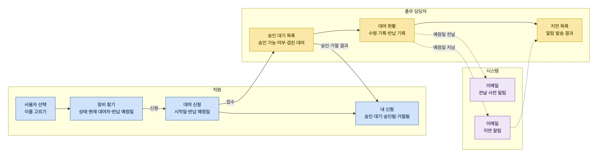
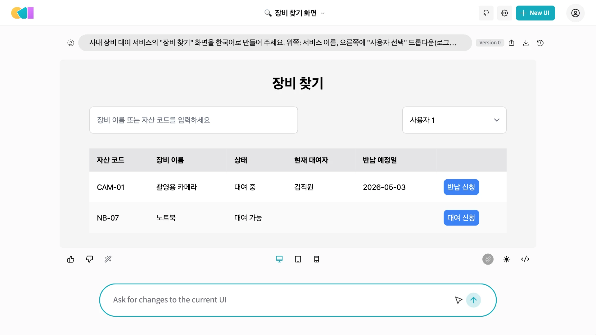
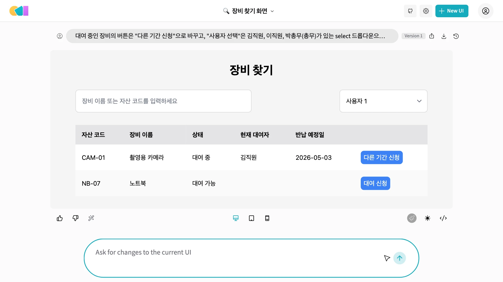
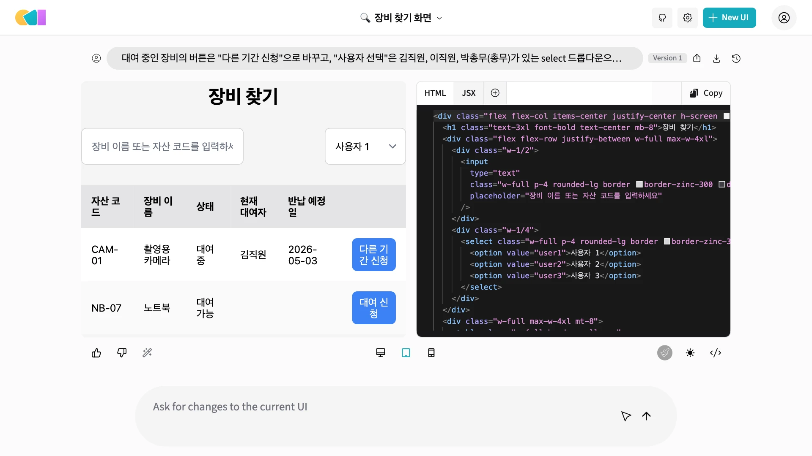
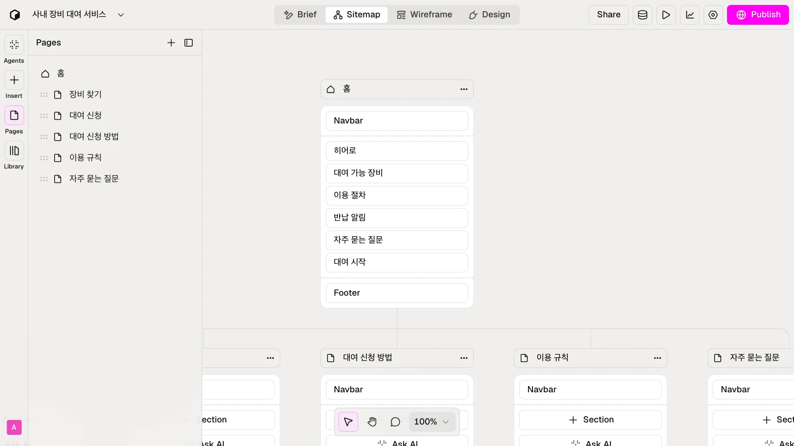
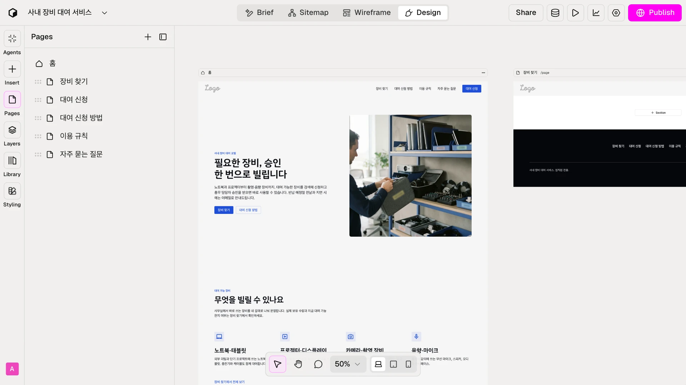
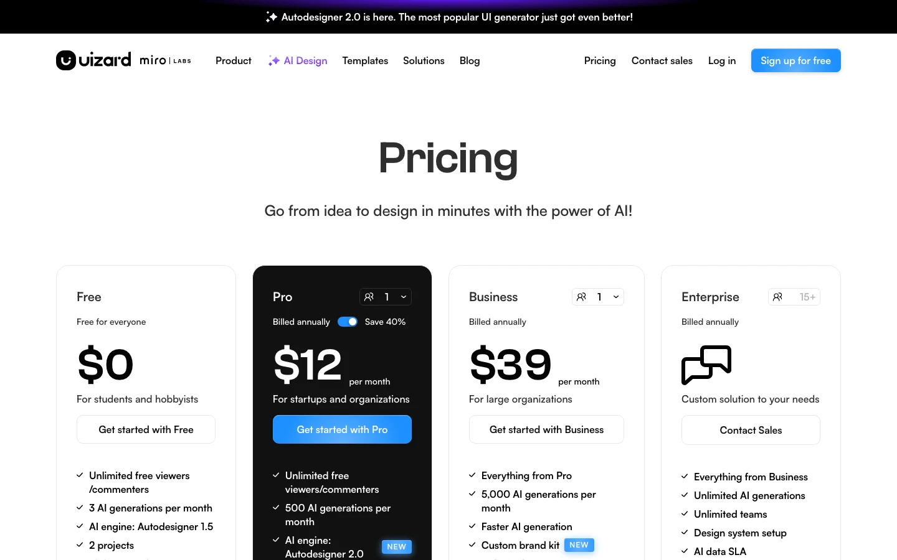

데이터 모델을 화면 흐름으로 옮기고, 로컬 모델로 OpenUI 화면을 만들어 대화로 고칩니다. Relume으로 소개 사이트를 만들고, 요구사항과 화면을 한 표에서 맞춰 봅니다.
화면을 그리기 전에 흐름부터 정합니다#
화면을 그리기 전에 흐름부터 정합니다. 직원은 사용자를 고르고, 장비를 찾아 신청합니다. 총무 담당자는 승인 대기 목록에서 승인하고, 수령과 반납을 기록합니다. 시스템은 이메일을 보냅니다. ERD의 칼럼은 화면의 입력 칸과 표로 그대로 이어집니다.

| 데이터 모델 | 화면에 나타나는 곳 |
|---|---|
| equipment, 현재 상태 뷰 | 장비 찾기 표: 자산 코드, 이름, 상태, 현재 대여자, 반납 예정일 |
| 승인 가능 여부 뷰 | 승인 대기 목록: 승인 불가 표시와 겹친 대여 번호 |
| notification.result | 지연 목록: 알림 발송 성공, 실패 |
화면 프롬프트에 넣을 다섯 가지#
화면 프롬프트에는 다섯 가지를 넣습니다. 화면 이름, 쓰는 사람, ERD에서 가져온 데이터, 상태별 예시 값, 그리고 업무 규칙입니다. 대여 중인 장비도 왜 신청할 수 있는지 이유까지 적었습니다. 이 프롬프트를 로컬 모델에 넣어 보겠습니다.
화면 이름
장비 찾기
쓰는 사람
로그인 없음, 이름 선택
데이터
ERD의 칼럼
예시 값
상태별 한 행씩
업무 규칙
왜 그렇게 동작하나
사내 장비 대여 서비스의 "장비 찾기" 화면을 한국어로 만들어 주세요. 위쪽: 서비스 이름, 오른쪽에 "사용자 선택" 드롭다운(로그인 없음). 검색창: 장비 이름 또는 자산 코드. 표: 자산 코드, 장비 이름, 상태(대여 가능 / 대여 중), 현재 대여자, 반납 예정일, 신청 버튼. 예시 행: CAM-01 촬영용 카메라, 대여 중, 김직원, 2026-05-03 / NB-07 노트북, 대여 가능. 대여 중인 장비의 신청 버튼도 누를 수 있습니다. 다른 기간을 신청할 수 있기 때문입니다.
OpenUI를 로컬 모델로 띄웁니다#
오픈유아이는 위앤비가 공개한 오픈소스입니다. 올라마로 모델을 받고, 파이썬 환경을 만들어 띄웁니다. 오픈에이아이 키 자리의 값은 비워 두지 않기 위한 값이고, 실제로 쓰지 않습니다. 설정에서 로컬 모델을 고르면, 프롬프트가 내 컴퓨터 밖으로 나가지 않습니다.
ollama pull qwen2.5-coder:7b
git clone https://github.com/wandb/openui && cd openui/backend
uv sync --frozen --extra litellm
OPENAI_API_KEY=xxx OLLAMA_HOST=http://127.0.0.1:11434 .venv/bin/python -m openui
따라 하기
- http://127.0.0.1:7878 을 엽니다
- 톱니 단추에서 Model을 Qwen2.5 Coder 7b로
- 앞 슬라이드의 프롬프트를 넣습니다
알아 둘 점
- OPENAI_API_KEY의 xxx는 비워 두지 않기 위한 값입니다
- Apache-2.0 라이선스, 모델 4.7GB
- 첫 화면은 1분 안쪽으로 나왔습니다
첫 결과를 요구사항과 대조합니다#
잠시 뒤 화면이 나옵니다. 표의 칼럼과 예시 값은 요청대로입니다. 그런데 대여 중인 장비의 버튼이 반납 신청으로 나왔습니다. 요청한 적 없고, 반납은 총무 담당자가 기록하는 일입니다. 같은 프롬프트로 두 번 돌렸는데 두 번 다 그랬습니다. 그럴듯해 보여도 요구사항과 대조해야 합니다.

맞는 것
표의 칼럼, 예시 값, 검색창, 사용자 선택
틀린 것
"반납 신청" 버튼. 요청하지 않았고, 반납은 총무 담당자가 기록합니다.
같은 프롬프트로 두 번 돌렸는데 두 번 다 이렇게 나왔습니다.
대화로 고치고, 고친 곳을 다시 봅니다#
대화로 고칩니다. 버튼을 다른 기간 신청으로 바꾸고, 사용자 칸은 드롭다운으로 바꿔 달라고 했습니다. 버튼은 바뀌었지만 사용자 칸의 기본값은 사용자 1 그대로입니다. 한 번에 하나씩 요청하고 고친 곳을 다시 확인합니다. 결과는 버전으로 남고, 코드 단추로 HTML을 볼 수 있습니다.
대여 중인 장비의 버튼은 "다른 기간 신청"으로 바꾸고, "사용자 선택"은 김직원, 이직원,
박총무(총무)가 있는 select 드롭다운으로 바꿔 주세요.


버튼은 바뀌었지만 사용자 칸의 기본값은 "사용자 1" 그대로입니다. 한 번에 하나씩 요청하고 확인합니다. 결과는 버전으로 남고, 코드 단추로 HTML을 볼 수 있습니다.
Relume: 소개 사이트를 네 단계로 만듭니다#
렐룸은 소개 사이트를 만드는 SaaS입니다. 첫 화면에 설명을 넣으면 가입 없이 시작되고, 브리프, 사이트맵, 와이어프레임, 디자인 순서로 약 6분 만에 진행되었습니다. 최대 대여 기간 같은 수치는 모른다고 밝히고 지어내지 않았습니다. 업무 앱이 아니라 소개 페이지 용도로 씁니다.


- relume.ai 첫 화면에 설명을 넣으면 가입 없이 시작됩니다
- 브리프 → 사이트맵 → 와이어프레임 → 디자인, 약 6분
-
결과: 6쪽 사이트맵, 홈 화면 디자인
-
스스로 말하듯 단순한 마케팅 사이트용입니다. 업무 앱 화면은 OpenUI나 Uizard로
- 사진과 장비 분류는 예시입니다. 실제 값으로 바꿉니다
Uizard: 여러 화면을 한 번에 만드는 도구#
유저드는 프롬프트로 여러 화면을 한 번에 만드는 디자인 도구입니다. 무료 요금제는 월 3회에 엔진 1.5이고, 오토디자이너 2.0과 리액트 내보내기는 월 12달러 프로부터입니다. 이 교재를 만들 때는 가입하지 않아 실행 화면을 확인하지 못했습니다.

| 항목 | Free | Pro $12 |
|---|---|---|
| AI 생성 | 월 3회 | 월 500회 |
| 엔진 | 1.5 | 2.0 |
| 프로젝트 | 2개 | 100개 |
| React·CSS | 없음 | 있음 |
Autodesigner 2.0과 코드 내보내기는 유료 기능입니다. 무료로 체험하면 그 기능은 볼 수 없습니다.
수업에서는 3부의 프롬프트와 화면 흐름을 붙여 넣어 봅니다. 이 교재를 만들 때는 가입하지 않아 화면을 확인하지 못했습니다.
bolt.diy: 실행되는 풀스택 앱까지 만드는 도구#
볼트 디와이는 실행되는 풀스택 앱까지 만드는 오픈소스입니다. 브라우저 안에서 앱을 돌려 미리 보고, 로컬 모델도 연결할 수 있습니다. MIT 라이선스이지만 안에서 쓰는 웹컨테이너 API에는 별도 상업 조건이 있습니다. 이 교재를 만들 때는 설치까지만 확인했으니, 수업 전에 강사가 먼저 돌려 봅니다.
git clone https://github.com/stackblitz-labs/bolt.diy && cd bolt.diy
pnpm install
pnpm run dev # http://localhost:5173
pnpm electron:build:dist # 데스크톱 앱으로 묶을 때
- 브라우저 안에서 앱을 실제로 실행해 미리 봅니다
- .env.local의 OLLAMA_API_BASE_URL로 로컬 모델을 연결합니다
- MIT 라이선스이지만 WebContainers API에는 별도 상업 조건이 있습니다
이 교재를 만들 때는 pnpm install까지만 확인했습니다. 실행 화면과 결과는 수업 전에 강사가 먼저 돌려 봅니다.
세 산출물을 한 표에서 맞춰 봅니다#
마지막으로 세 산출물을 한 표에서 맞춰 봅니다. 승인 화면을 만들 때 프롬프트에 승인 버튼 비활성과 겹친 번호 표시를 적었는데도 빠졌습니다. 승인 불가라고 쓰여 있는데 버튼은 눌립니다. 이런 어긋남은 요구사항, 데이터, 화면을 나란히 놓아야 보입니다.
| 요구사항 | 데이터 | OpenUI 화면 결과 |
|---|---|---|
| FR1.1 현재 대여자, 반납 예정일 | 현재 상태 뷰 | 맞음. 장비 찾기 표에 있습니다 |
| FR3.2 겹치면 승인 불가 | 승인 가능 여부 뷰 | 어긋남. "승인 불가"는 나오지만 승인 버튼이 눌리고 겹친 번호가 없습니다 |
| FR6.1 이름 선택 | employee | 부분. 기본값이 사용자 1입니다 |
| FR5 지연 알림 결과 | notification | 아직 없음. 지연 목록 화면을 만들어야 합니다 |
승인 화면은 "버튼 비활성, 겹친 번호 표시"를 프롬프트에 적었는데도 빠졌습니다. 이 표가 있어야 잡힙니다.
3부 확인 문제#
3부를 정리합니다. 프롬프트에는 다섯 가지를 넣고, 대화로 고칠 때는 한 번에 하나씩 요청합니다. 렐룸은 소개 사이트에, 오픈유아이는 업무 화면 시안에 씁니다. 정합성 표에 어긋난 곳을 하나 이상 적었는지 확인합니다.
| 문제 | 답 |
|---|---|
| 화면 프롬프트에 넣을 다섯 가지는? | 화면 이름, 쓰는 사람, 데이터, 예시 값, 업무 규칙 |
| 대화로 고칠 때 요령은? | 한 번에 하나씩 요청하고 고친 곳을 다시 봅니다 |
| Relume과 OpenUI는 어떻게 나눠 씁니까? | Relume은 소개 사이트, OpenUI는 업무 화면 시안 |
다음으로 넘어가기 전에 확인합니다
- 장비 찾기 화면에 버전이 두 개 이상 있습니다
- 내 정합성 표에 어긋난 곳을 하나 이상 적었습니다